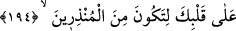

yaratılmışlardır.
Fakir (Bursevî) der ki: Şüphesiz meleklerin latif cisimleri vardır. Yaradılışlarının
letâfetinden dolayı ruhun hükmü onlarda ağır basmış ve “ervah (ruhlar)” diye
isimlendirilmişlerdir. Cebrail (a.s.)’ın ise bu mânâda ziyadesiyle ihtisası vardır. Çünkü
onun diğer meleklere göre durumu bir peygamberin ümmetinin fertlerine göre olan
durumu gibidir.
Bilesin ki, Kur’ân Allah’ın kelamı ve O’nun zâtıyla kâim bir sıfatıdır. Allah ona Arap
harfleriyle lafız kisvesi giydirmiş ve onu Cebrail (a.s.)’a indirmiştir. Hakîkatlerinde
tasarrufda bulunulmaması için Cebrail (a.s.)’ı ona emin kılmıştır. Sonra Cebrail (a.s.)
onu olduğu gibi Muhammed (s.a.)’in kalbine indirmiştir. Nitekim Allah Teâlâ şöyle
buyurur:
194. Senin kalbine; uyarıcılardan olman için,
“Senin kalbine....” Yani ey Muhammed, Cebrâil onu sana okudu; sen de onu kalbinle
aldın, hıfzettin.
Kalb özel olarak zikredilmiştir. Çünkü şuur ve tasdikin mahalli, vahiy ve ilhamın
kaynağıdır. İnsan vücûdunda, ondan başka hitaba ve feyze lâyık bir yer yoktur. Bu yüce
rütbe ve yüksek lütuf diğer peygamberler arasında Hz. Peygamber (a.s.)’a tahsis
edilmiştir. Çünkü onların kitapları levhalar ve sahîfeler halinde kalplerine değil bir
bütün olarak sûretlerine indirilmiştir. Nietkim et-Te’vîlâtü’n-Necmiyye’de böyle
geçmektedir.
Keşfü’l-esrâr’da der ki: “Vahiy, Hz. Mustafa (s.a.)’e indiği zaman vahye şiddetli istek
duyması ve onunla kendinden geçmesi (istiğrâk) sebebiyle önce kalbine inerdi. Sonra
kalbinden anlayışına ve kulağına intikal ederdi. Bu, yukarıdan aşağıya bir iniştir ve
havâssın derecesidir. Avama gelince onlar ilk olarak işitirler. Böylece vahiy ilk kez
onların kulaklarına, sonra anlayışlarına, sonra da kalblerine tenezzül eder/iner. İşte bu
aşağıdan yukarıya doğru bir terakkîdir. Bu, müridlerin ve ehl-i sulûkün durumudur. Bu
iki durum birbirinden ne kadar farklı ve uzaktır.
Cebrail (a.s.) vahiy getirdiğinde bazen melek sûretinde, bazen beşer sûretinde olurdu.
Eğer vahiy ve haber, şer’î hükümlerin açıklaması, helâl ve haramlarla ilgiliyse beşer
sûretinde gelirdi. “Sana Kitab’ı indiren O’dur.” (Âl-i İmrân, 3/7) âyeti bunu ifâde
eder. Burada kalb zikredilmemektedir. Şâyet vahiy aşk ve muhabbete, âriflerin sırlarına
ve remzlerine dair ise Cebrail melek sûretinde gelirdi. Bu ruhanî ve lâtif bir hâl olduğu
için Hz. Peygamber’in gönlüne bağlanır/yakın olur, böylelikle başkaları o sırlara vâkıf
olmazdı. Bu hususta Hak Teâlâ şöyle buyurur: “Onu Rûhu’l-emîn (Cebrail) senin
kalbine indirdi.” Bu vahiy hali tamam olduğu zaman “O hal benden gider ve ben de o